→ name “lactam” is given to cyclic amides and is analogous to the name “lactone,” which is given to cyclic esters.
→ β-lactam is a cyclic amide with four atoms in the ring (azetidinone)
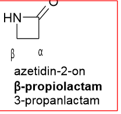
→ Penicillin characterized by the presence of a substitued 5-membered thiazolidine ring fused to the b-lactam ring
PENICILLIN
→ → 6-APA(6-aminopenicillanic acid ) has only very weak antibiotic activity, but when substituted on its primary amino group with a suitable amide side chain, its potency and antibacterial spectrum are profoundly enhanced
→ → The most unstable bond in the penicillin molecule is the highly strained and reactive β-lactam amide bond
- bond cleaves moderatly slowly in water but increase rapidply in alkaline solutions to produce penicilloic acid which readly decarboxylated to produce penilloic acid
- hydrolysis deactivates the antibiotic
→ The original fermentation derived penicillins were produced by growth of the fungus Penicillium chrysogenum on complex solid media
- supply of phenylacetic acid → incorporated into the molecule to produce mainly benzylpenicillin (penicillin G in
- of phenoxyacetic acid instead leads to phenoxymethyl penicillin (penicillin V).
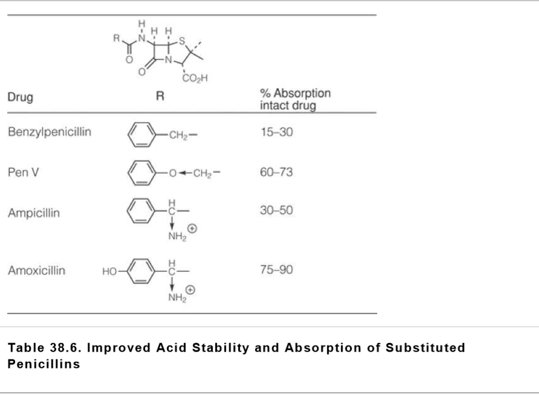
SAR
→ The original fermentation derived penicillins were produced by growth of the fungus Penicillium chrysogenum on complex solid media
- supply of phenylacetic acid → incorporated into the molecule to produce mainly benzylpenicillin (penicillin G in
- of phenoxyacetic acid instead leads to phenoxymethyl penicillin (penicillin V).

→ The substitution of a side-chain R group on the primary amine with an electron-withdrawing group decreases the electron density on the side-chain carbonyl and protects these penicillins, in part, from acid degradation
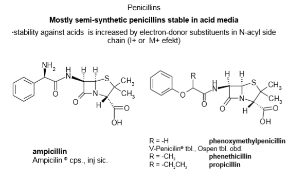
→ The more lipophilic the side chain of a penicillin, the more serum protein bound is the antibiotic
- This has some advantages in terms of protection from degradation, but it does reduce measurably the effective bactericidal concentration of the drug in whole blood
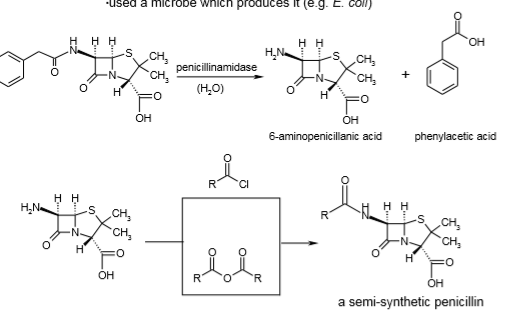
PENICILLINASE-RESISTANT PARENTERAL PENICILLINS
→ Using an isoxazolyl ring as a bio-isosteric replacement for the benzene ring and a methyl on one flank and a substituted benzene ring on the other in place of the methoxyls of methicillin produces the isoxazolyl penicillin
- Chemically, they differ from one another in the number of chlorine substituents on the benzene ring
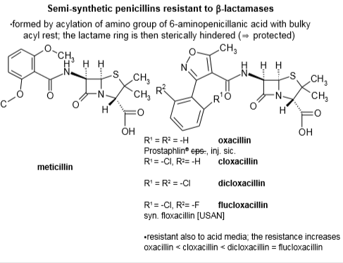
Penicillinase-Sensitive, Broad-Spectrum, Oral Penicillins
→ ampicillin, is a benzylpenicillin analogue in which one of the hydrogen atoms of the side-chain methylene has been replaced with a primary amino group to produce an R-phenylglycine moiety
- electron withdrawing character of the protonated primary amine group, reducing participation in hydrolysis of the β-lactam bond as well as to the comparative difficulty of bringing another positively charged species (H3O+) into the vicinity of the protonated amino group
→ oral efficacy of ampicillin for systemic infections can be enhanced significantly through the preparation of pro-drugs
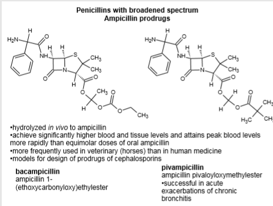
- , bacampicillin is a weak base and is very well absorbed in the duodenum (80–98%). Enzymatic ester hydrolysis in the gut wall liberates carbon dioxide and ethanol, followed by spontaneous loss of acetaldehyde and production of ampicillin
→ Amoxicillin is a close analogue of ampicillin, in which a para-phenolic hydroxyl group has been introduced into the side-chain phenyl moiety
- adjusts the isoelectric point of the drug to a more acidic value, and this is believed to be partially responsible,, along with the intestine peptide transporter, for the enhanced blood levels obtained with amoxicillin as compared to ampicillin itself
→ Clavulanic acid serves to protect amoxicillin to a considerable extent against β-lactamases
- a mold product with only weak intrinsic antibacterial activity
- irreversible inhibitor of most β-lactamase
- acylate the active site serine by mimicking the normal substrate ( suicide substrate)
- 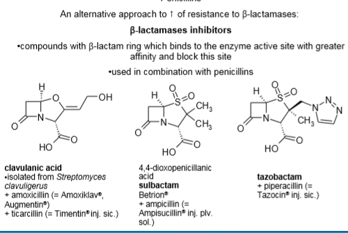
- often is coadministered with piperacillin because of tazobactam's ability to inhibit β-lactamases.
→ prepared by partial chemical synthesis from penicillins
→ oxidation of the sulfur atom to a sulfone greatly enhances the potency of sulbactam
→ Mezlocillin and piperacillin(parentally)
- ampicillin derivatives in which the D–side chain amino group has been converted by chemical processes to a variety of substituted urea analogues → known as acylureidopenicillins
- side-chain moiety mimics a longer segment of the peptidoglycan chain than ampicillin does → cell wall fragment usually is a tetrapeptide, so there certainly is room for an extension in this direction
→ Carbenicillin and indanyl carbenicillin( injection)
- benzylpenicillin analogue in which one of the methylene hydrogens of the side chain has been substituted with a carboxylic acid moiety
- side-chain carboxyl produces enhanced anti-Gram-negative activity
- carbenicillin can decarboxylate readily to produce benzylpenicillin
- a sulfur-based bio-isostere of carbenicillin that cannot decarboxylate as the carboxyl group of carbenicillin does
- When potassium clavulanate is added to ticarcillin (Timentin), the combination has enhanced antipse– domonad activity because of its enhanced stability to lactamases
- 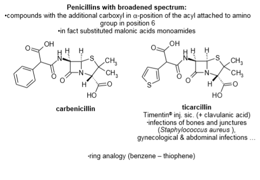
CEPHALOSPORINS:
→ r β-lactam ring annealed to a 6-membered dihydrothiazine ring
- As a consequence of the bigger ring, the cephalosporins should be less strained and less reactive/potent
- reactivity loss, however, is made up by possession of an olefinic linkage at C-2,3 and a methyleneacetoxy group at C-3.
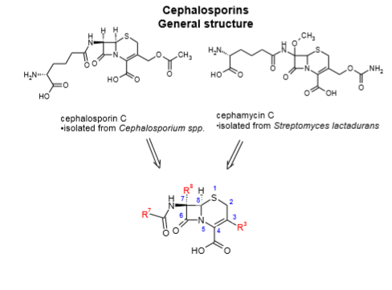
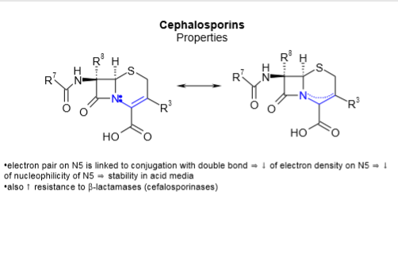
SAR
→ f an amino and a hydrogen to the α and α′ position, respectively, results in a basic compound that is protonated under the acidic conditions
- ammonium ion improves the stability of the β-lactam
- 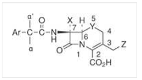
→ 7β amino group is essential for antimicrobial activity (X = H),
- replacement of the hydrogen at C-7 (X = H) with an alkoxy (X = OR) results in improvement of the antibacterial activity
- methoxy also improves the drugs stability toward β-lactamase.
- The derivatives where Y = S exhibit greater antibacterial activity than if Y = O,
- * Z is a 5-membered heterocycle versus a 6-membered heterocycle.
⇒ [changes improved β-lactamase resistance: 1) The L-isomer of an α amino α′ hydrogen derivative of a cephalosporin was 30- to 40-fold more stable than the D-isomer, 2) the addition of a methoxyoxime to the α and α′ positions increased stability nearly 100-fold, and 3) the Z-oxime was as much as 20,000-fold more stable than the E-oxime (Fig. 38.22). These changes have been incorporated into a number of marketed and experimental cephalosporins (Cefuroxime, Ceftizoxime, Ceftazidime, and Cefixime]
1ST GENERATION
Parental use
CEFAZOLIN
→ C-3 replaced by a thio-linked thiadiazole ring ( activating leaving group, the moiety is not subject to the inactivating host hydrolysis reaction that characterizes cephapirin. )
→ C-7, it possesses a tetrazoylmethylene unit
→ is comparatively unstable and should be protected from heat and light.
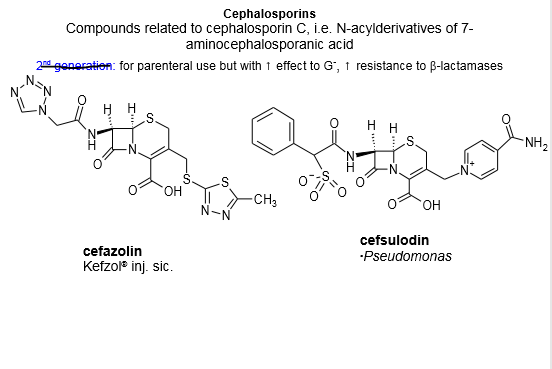
→ CEFADROXIL (oral use_)
- amoxicillin-like side chain at C-7 and is orally active
→ CEPHALEXIN
- ampicillin-type side chain conveys oral activity to cephalexin
- it no longer has an activating side chain at C-3 and, as a consequence, is somewhat less potent
- Puzzling is the fact that the use of the ampicillin side chain in the cephalosporins does not result in a comparable shift in antimicrobial spectrum
- e aromatic ring in the ampicillin side chain has been partially hydrogenated by a Birch reduction such that the resulting molecule is still planar and π-electron excessive but has no conjugated olefinic linkages
- omparatively acid stable and, therefore, is rapidly and nearly completely absorbed from the GI tract
- used both orally and IM so that parenteral therapy
Second-Generation Cephalosporins
→ CEFAMANDOLE NAFATE
- formylated D-mandelic amide moiety at C-7.
- Formate ester is cleaved rapidly in the host to release the more active cefamandole →overcome the instability of cefamandole when it is stored in dry form
- Loss of the 5-thio-l-methyl-l-H-tetrazole moiety from C-3 → prothrombin deficiency and bleeding problems
- enhances potency and prevents metabolism by deacetylation
→ CEFUROXIME
- a Z-oriented methoxyimino moiety as part of its C-7 side chain → considerable resistance to attack by many β-lactamases
- carbamoyl moiety at C-3 is intermediate → metabolic stability between the classic acetyl moieties and the thiotetrazoles
- axetil ester (1-[acetyloxy]ethyl ester) pro-drug
- more lipophilic drug is produced that gives satisfactory blood levels on oral administration
- ester bond is cleaved → resulting intermediate form loses acetaldehyde spontaneously to produce cefuroxime itself
→ CEFOXITIN
- C-7 side chain as cephalothin and the same C-3 side chain as cefuroxime
- α-oriented methoxyl group in place of the normal H-atom at C-7. → increased steric bulk conveys very significant stability against β-lactamases
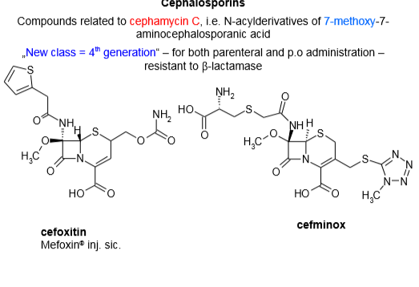
→ CEFACLOR
- Cefaclor differs from cephalexin primarily in the bio-isosteric replacement of methyl by chlorine at C-3 and is quite acid stable, allowing oral administration. It also is quite stable to metabolism. It is less active against Gram-negative bacteria compared with the other second-generation cephalosporins but is more active against Gram-negative bacteria compared with the first-generation drugs
→ CEFOTAXIME
- a Z-methoxyimino moiety at C-7 that conveys significant β-lactamase resistance.
- oxime moiety of cefotaxime is connected to an aminothiazole ring
- metabolically vulnerable acetoxy group attached to C-3 and loses approximately 90% of its activity
→ CEFPODOXIME PROXETIL
- pro-drug
- cleaved enzymically to 2-propanol, carbon dioxide, acetaldehyde, and cefpodoxime in the gut wall.
{kind=link}
{kind=link}
{kind=link}
{kind=link}
{kind=link}
{kind=link}
{kind=link}
{kind=link}
{kind=link}
{kind=link}
{kind=link}
{kind=link}
{kind=link}
{kind=link}
{kind=link}
{kind=link}
{kind=link}
{kind=link}
{kind=link}
{kind=link}
{kind=link}
{kind=link}
{kind=link}